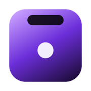

Notch Apple passkey
Open this page from Notch Apple.
Your passkey stays in your browser or password manager. Notch Apple never sees it.
Open this page from Notch Apple.
Your passkey stays in your browser or password manager. Notch Apple never sees it.